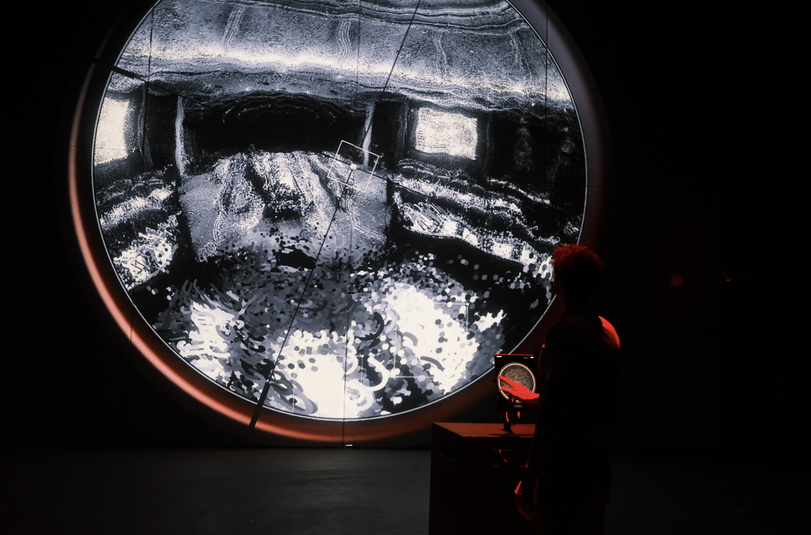

Artwork
Operorama
Operorama departs from the history of the panorama, a medium long bound to military vision, and extends this genealogy into a critique of contemporary immersive media. From the nineteenth-century rotunda to today’s algorithmic eye, the act of looking has been shaped by technologies of power, distance, and attention. Within this lineage, Operorama functions as a weaponized angle: a fisheye trained on a panoramic world constructed through the viewer’s own belief system. The installation unfolds through attention-based interaction. Viewers encounter AI-generated social media posts and mediated accounts of a fictional war set in 2031, predicted from the patterns of last decade armed conflicts. As they scroll, pause, select, and ignore, the system never asks them to choose a side. Instead, it infers a belief vector from their attention and maps it onto one of twenty-five cognitive positions, each representing a distinct way of seeing the conflict. The hand that scrolls becomes the hand that builds. The device that once fed the viewer turns into an instrument for aiming at the world they have constructed. As engagement deepens, the visible field narrows. Reflecting on Alison Landsberg’s concept of prosthetic memory in the age of AI, Operorama asks how mediated memory shifts when it is no longer mass-produced, but inferred and generated for each viewer alone. The work examines how attention, once captured by algorithmic systems, shapes belief, and how belief, once internalized, enters the deeper terrain of prosthetic social memory.

Image copyright to Weidi Zhang.